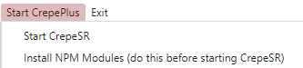

So first, you need to install the node modules.
You can do this by clicking on "Start CrepePlus > Install NPM Modules (do this before starting CrepeSR)" (shown in the image below)
NOTE: To install CrepeSR modules, you need the C++ visual studio workload and Python
When it is done installing, click on "Start CrepePlus > Start CrepeSR".
Open "StarRail.exe" once CrepePlus has started.
If you cannot connect/view websites, go to Settings > Search "Proxy" > Change proxy settings > Turn "Use a proxy server" off
- -|-